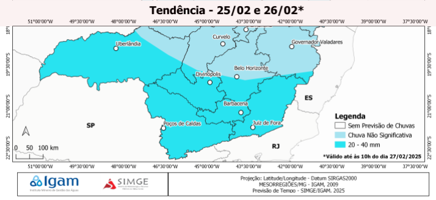

|
|
BOLETIM DA DEFESA CIVIL
|
Previsão para Bom Jardim de Minas |
||||
|---|---|---|---|---|
| dia | 🌡 | 💧 | ☔ | Descrição |
| qua |
32oC 18oC |
49% |  |
Parcialmente nublado |
| qui |
32oC 18oC |
46% |  |
Ensolarado |
| sex |
33oC 19oC |
40% | |
Parcialmente nublado |
| sab |
33oC 19oC |
43% | |
Parcialmente nublado |
| dom |
33oC 19oC |
43% | |
Parcialmente nublado |
| seg |
29oC 17oC |
51% | |
Parcialmente nublado |
| ter |
32oC 19oC |
53% |  |
Chuva com trovoadas |
Esta terça-feira é o começo de uma semana predominantemente ensolarada e quente. Todavia não excluí a possibilidade de chuva com trovoadas para hoje. O dia pode ficar nublado em partes do dia devido aos alto índices de umidade pela manhã, mas a umidade deve baixar para um pico mínimo de 53% nas horas mais quentes da tarde.
A preocupação maior deverá ficar por conta das altas temperaturas máximas que estarão todas acima de 30 °C até domingo. São consideradas temperaturas perigosas para a saúde humana temperaturas iguais ou superiores a 27 °C.
| Precipitação | entre 20 e 40 mm | |
|---|---|---|
| Tempo | Tempestades leves | |
| Umidade | 53% |
Para se proteger do calor, é importante beber água, usar roupas leves e protetor solar, além de evitar atividades físicas intensas. Beba água ou líquidos sem álcool, mesmo que não tenha sede. Inclua chás, sucos naturais, leite e sopas na sua alimentação. Consuma alimentos leves e frescos, como saladas e frutas. Evite bebidas alcoólicas e com elevado teor de açúcar.
Use roupas leves, largas e de cores claras. Use bonés, chapéus, camisas e óculos UVA/UVB. Aplique protetor solar com FPS de no mínimo 30. Reaplique o protetor solar a cada duas horas ou sempre que sair da água. Evite a prática de atividades físicas no período de sol intenso, das 10:00 às 16:00. Faça atividade física em momentos frescos. Tente permanecer em áreas frescas, na sombra ou em ambiente com ar-condicionado.
Evite ficar exposto ao sol, procure caminhar pela sombra. Tome banhos frios com frequência e antes de dormir. Fique atento aos sintomas, principalmente em idosos e crianças. Procure ajuda médica se sentir qualquer mal-estar.
 |
TIPO DE ALERTA: BAIXA UMIDADE |
 |
INÍCIO DO ALERTA: 17 Fev 12:00 |
DESCRIÇÃO: Simge e IGAM alertam para período de baixa umidade relativa do ar (abaixo de 50%) entre os dias 17 e 20 (hoje). Alto risco de complicações respiratórias e problemas relacionados à hidratação. HIDRATE-SE! |
 |
GRAU DE RISCO: PERIGO REAL |
 |
FIM DO ALERTA: 20 Fev 23:59 |
|
|

|
|